AI 急救科普互动站
急时救
心脏停跳后，每 1 分钟都在消耗生命。学会几项急救技能，关键时刻你真的能救人。
AI 急救学习助手
通过情景问答练习急救知识
在这里学习、练习判断。真实紧急情况请立即拨打 120，按急救调度员指导操作，不要等待 AI 回复。
进入练习 ›
有人晕倒了怎么办？
① 先拨打 120 开免提 ② 判断意识呼吸 ③ 按指导胸外按压、取 AED
选择板块开始学习
心肺复苏
判断呼救、胸外按压、人工呼吸与 AED 全流程。
建议学习路线
急救基础 → 心肺复苏 → 海姆立克 → 止血包扎 → 烧烫伤，最后做实战测验巩固。每学完一个板块，随时回到这里切换。
内容参考 美国心脏协会（AHA）心肺复苏指南与美国红十字会急救资料整理 | 审核日期 2026-10 | 适用普通公众科普
本作品为科普教学，不能替代专业急救培训；紧急情况请拨打 120 并按调度员指导操作。
原创健康科普 · © 2026 辽宁省大学生科普设计大赛
急救基础黄金时间 · 判断 · 正确呼救
心脏骤停后，立即行动至关重要
心脏停跳后大脑迅速缺氧。越早识别、呼救、按压并使用 AED，生存机会越大——不要等待某个"黄金时间"过去，也不要因延误而放弃施救。
分秒必争越早识别呼救越好
CPR维持脑与心脏供血
AED尽早取得并使用
为什么要立即行动
脑大脑最不耐受缺氧
心脏骤停后大脑供血中断，缺氧时间越长，发生严重损伤的风险越高；但具体时间因人而异，不应据此放弃施救。
心心脏停跳 = 泵血停止
供血中断后，越早通过胸外按压恢复血液流动、尽早除颤，越有利于争取生存机会。
你身边人是"第一响应人"
专业急救到达前的时间，靠现场目击者呼救、按压和取 AED 来争取；拨打120后可按调度员指导操作。
感受时间有多紧迫
教学模拟：本倒计时仅用于帮助理解时间的紧迫性，并不代表患者在 4 分钟内必然发生某种特定损伤。任何时候开始施救都有意义。
这 4 分钟，你可以做这些
0:00发现晕倒 → 呼救、判断呼吸
0:30拨打 120，保持通话
1:00开始胸外按压 100~120 次/分
2:00持续按压，不要中断
3:00有 AED 立即贴电极除颤
4:00持续到专业急救到达
心肺复苏开始得越早，存活率越高
数据来源：美国心脏协会（AHA）——"心跳未恢复时，每延迟 1 分钟，相对存活机会下降约 7%~10%；立即实施 CPR 并尽快使用 AED，可把存活机会提高 2~3 倍。"曲线按该权威口径示意，具体结果因人而异。
记住
你不需要"确认"TA 一定心脏骤停——无意识 + 无呼吸，就立即按 CPR 做，别犹豫。
正确呼救：拨打 120 讲清 5 件事
很多人知道"打 120"，但怎么打、说什么同样能救命。
地准确地址
街道、楼号、楼层、房间，再给一个明显参照物（如"XX 商场 3 号门"）。
病患者情况
人数、年龄、意识、呼吸、有无出血，按调度员引导回答。
2寻求 AED
大声询问周围有无 AED，让旁人去取，尽快开机按提示使用。
3请人协助
一人按压会累，请会的人轮换；开免提，调度员会电话指导 CPR，不要挂断。
真实案例 · 立即 CPR 的意义
1丈夫为心脏骤停的妻子持续 CPR，直到救援到达
急救基础真实案例
案例来源：美国心脏协会（AHA）官方急救案例 · 2026-10 核对
美国心脏协会报道了一则真实案例：一位丈夫在妻子突发心脏骤停时立即实施胸外按压，并让旁人取来 AED，持续施救直到急救人员接手。AHA 指出，立即实施 CPR 可将院外心脏骤停的存活机会提升 2~3 倍——绝大多数心脏骤停发生在家里，而旁观者的"第一反应"往往决定结果。
2国内：商场店员四分钟CPR救回突发心梗老人
急救基础国内案例
案例来源：中国红十字会公开急救案例 · 2026-10 核对
国内某商场一位老人突发心梗倒地，意识丧失、呼吸停止。商场值班店员听到呼救后 10 秒内赶到，立即开始胸外按压，并让同事拨打 120、取来商场内的 AED。持续按压约 4 分钟后急救人员到达，老人最终被送医救回。关键启示：心脏骤停发生在公共场所时，身边人敢不敢救、会不会救，直接决定生死。
知识依据：本页要点参考美国心脏协会（AHA）心肺复苏指南、美国红十字会（Red Cross）及英国 NHS 官方急救资料整理，审核日期 2026 年 10 月。仅供科普学习，操作技能请参加正规急救培训。
心肺复苏第 1 节 · 判断与呼救
救人的第一步：安全 → 判断 → 呼救
发现有人倒地，先别慌。按顺序做这 4 件事。
什么是 CPR？
全称
心肺复苏（Cardiopulmonary Resuscitation）
做什么
用胸外按压（必要时配合人工呼吸）人工维持血液循环和供氧
为什么
为专业救援争取时间。未受训也可拨打 120 按调度员指导只做胸外按压
1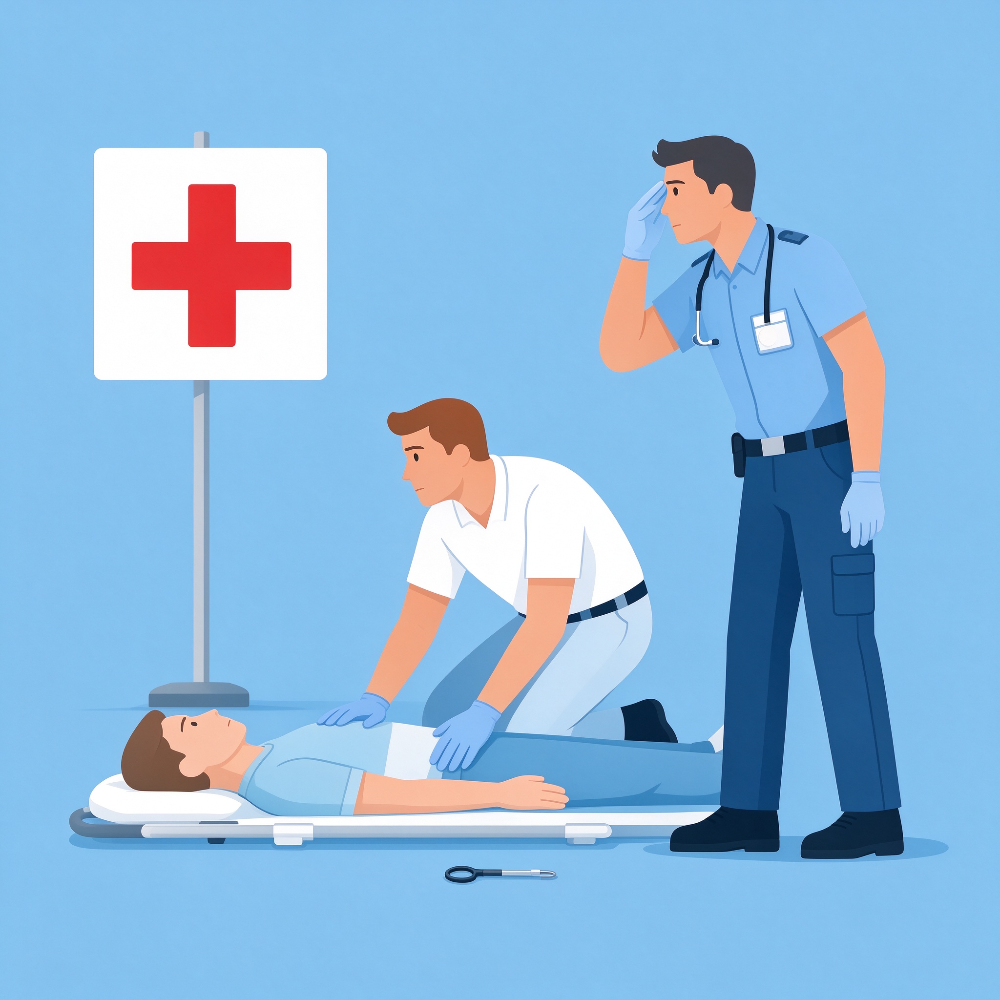
确认现场安全观察有无漏电、车辆、坠物，确保安全再靠近。
3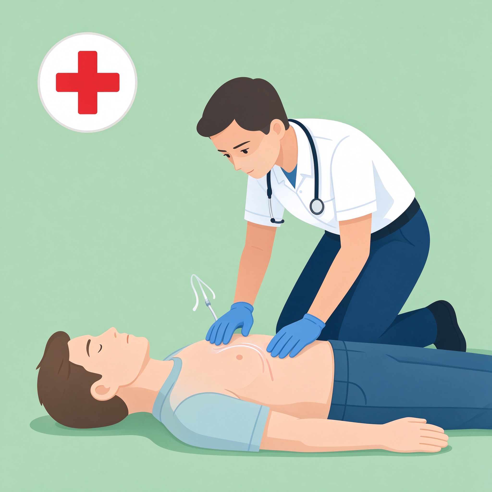
判断呼吸看胸廓起伏 5~10 秒，濒死叹息算无呼吸。
4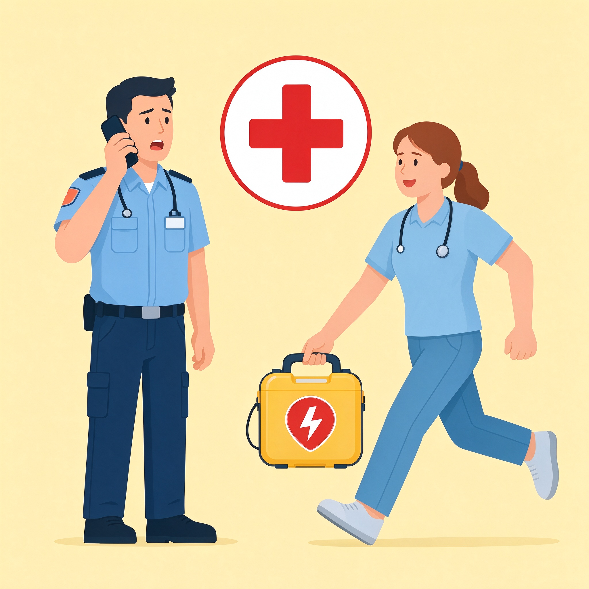
呼救取 AED让人打 120、取 AED，安排人接应急救。
5~10s判断呼吸时长
无反应立即 CPR
120+AED双线求救
小贴士：只观察胸廓起伏即可，不要为"确认"浪费宝贵时间；濒死样叹息也算无呼吸，应立即 CPR。
你属于哪类施救者？点选查看你的做法
选择你的身份，查看对应的正确做法。两种身份都能救人，关键是立即行动。
知识依据：本页要点参考美国心脏协会（AHA）心肺复苏指南、美国红十字会（Red Cross）及英国 NHS 官方急救资料整理，审核日期 2026 年 10 月。仅供科普学习，操作技能请参加正规急救培训。
心肺复苏第 2 节 · 胸外按压
胸外按压 · 跟着节奏来
按压位置、深度、频率是三大关键。跟着节拍器试着按一按。
已完成按压次数
0
按压
跟随节拍，点击"按压"圆盘模拟一次按压（目标深度 5~6cm）
教学模拟声明：本互动的深度数值由程序随机演示，仅用于帮助记忆"5~6cm"这一目标范围，并非真实人体测量值，本网页也不具备任何硬件测量能力。
PS：深度按成人胸廓厚度约 1/3 判断，约 5~6cm；每次按压后让胸廓完全回弹，再按下一次。
按压三大关键
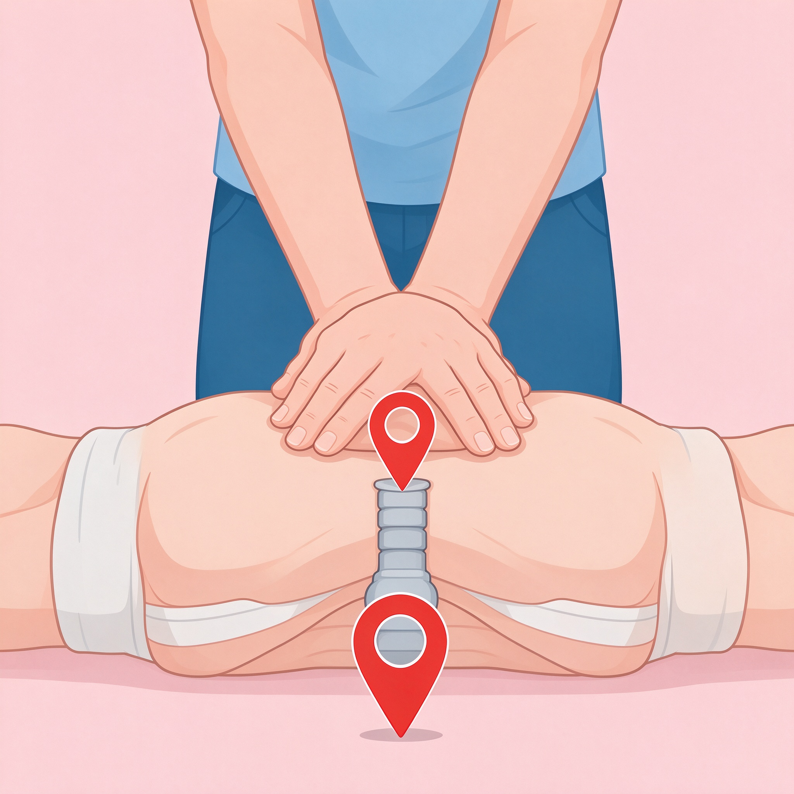
位置两乳头连线中点，掌根重叠垂直下压
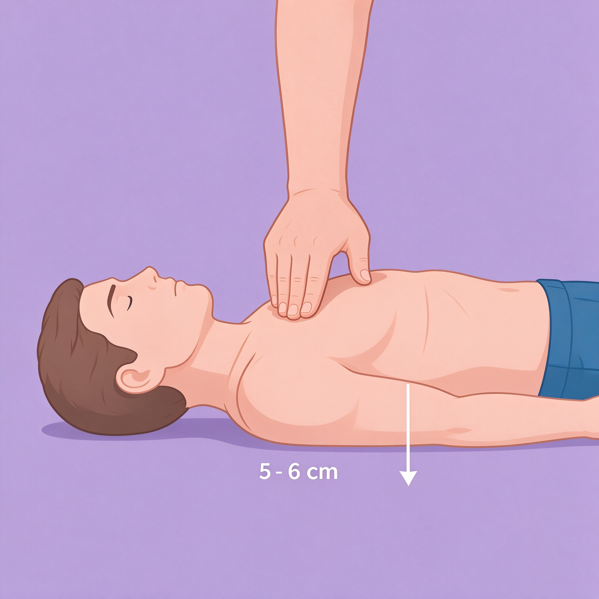
深度5~6cm，按压后胸廓充分回弹
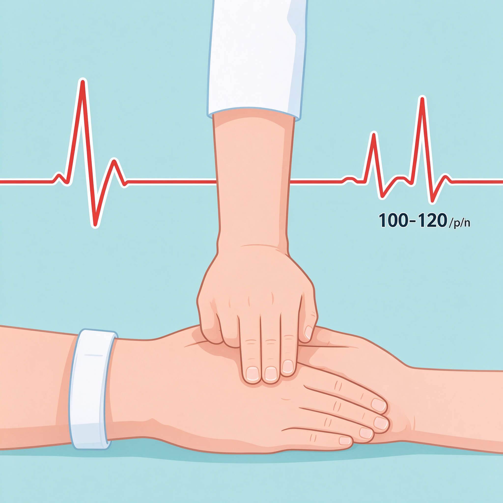
频率100~120 次/分，尽量不间断
5~6cm按压深度
100~120次/分
回弹别压住不松
技巧
跟着 110 BPM 的音乐或默数"01、02、03…"保持节奏；累了要尽快换人，别中断太久。
知识依据：本页要点参考美国心脏协会（AHA）心肺复苏指南、美国红十字会（Red Cross）及英国 NHS 官方急救资料整理，审核日期 2026 年 10 月。仅供科普学习，操作技能请参加正规急救培训。
心肺复苏第 3 节 · 人工呼吸与 AED
开放气道 → 人工呼吸 → AED
按压 30 次后做 2 次人工呼吸，按 30:2 循环；AED 一到就立即使用。
先开放气道，再吹气
道开放气道
使 TA 仰卧，一手压前额、一手抬下颌（仰头抬颏法），让气道打开。
吹人工呼吸 ×2
捏住鼻子、口对口缓慢吹气，看到胸廓明显隆起即有效；连续吹 2 次。
循30 : 2 循环
按压 30 次 + 人工呼吸 2 次为一组，持续循环，直到 AED 或专业救援接手。
AED：傻瓜式除颤器
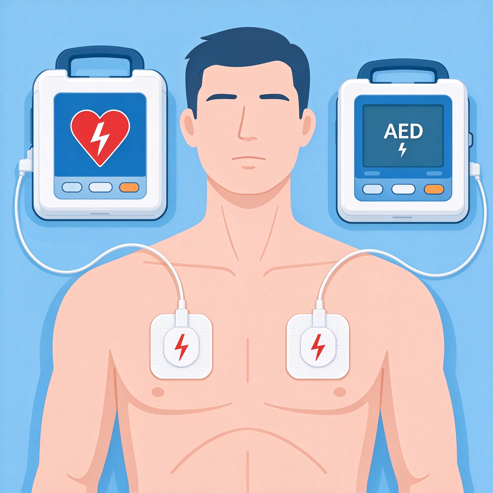
AED 自动体外除颤器：开机后全程语音提示，按图示贴电极片即可
开开机听指令
打开 AED 电源，它会全程语音提示，一步步照做即可。
贴贴电极片
按图示把电极片贴在裸露胸壁（右锁骨下 + 左乳头外侧）。
电让开再除颤
AED 分析心律时不要触碰 TA；提示"电击"时确认所有人离开，再按放电键。
继除颤后继续按压
放电后立即继续胸外按压，AED 会提示何时再次分析。
放心
AED 只会对需要电击的心律放电，识别为不需要时会提示"不电击"，不会伤到 TA。
知识依据：本页要点参考美国心脏协会（AHA）心肺复苏指南、美国红十字会（Red Cross）及英国 NHS 官方急救资料整理，审核日期 2026 年 10 月。仅供科普学习，操作技能请参加正规急救培训。
心肺复苏第 4 节 · 完整流程
CPR 完整流程，串起来
把前面学的串成一条完整流程线。点击"开始演示"，节点依次点亮。
何时停止 CPR
TA 恢复意识/呼吸、AED 或专业救援到达并接手、或施救者力竭无法继续——才考虑停止。
真实案例 · 机上 CPR 与 AED
3消防员在航班上为乘客 CPR + AED 成功施救
心肺复苏真实案例
案例来源：美国心脏协会（AHA）官方报道 · 2026-10 核对
AHA 报道：一名消防员在航班上发现乘客心脏骤停，立即进行胸外按压，并指挥机组取用 AED 完成除颤，持续到救护人员接管，患者最终被送医获救。案例要点：呼救 + 胸外按压 + 尽早用 AED，三者缺一不可——这正是一套完整 CPR 流程的价值。
4英国 NHS：普通旁观者做单纯胸外按压同样有效
心肺复苏权威指南
来源：英国国家医疗服务体系（NHS）官方 CPR 指南 · 2026-10 核对
NHS 明确建议：没有受过急救培训的普通人，只做胸外按压也是有意义的，不必因担心"人工呼吸做得不对"而不敢上手。按压位置在两乳头连线中点，深度约 5~6 厘米，速度每分钟 100~120 次，持续到专业人员到达。拨打 120 后开免提，调度员会在电话里一步步指导你。
知识依据：本页要点参考美国心脏协会（AHA）心肺复苏指南、美国红十字会（Red Cross）及英国 NHS 官方急救资料整理，审核日期 2026 年 10 月。仅供科普学习，操作技能请参加正规急救培训。
海姆立克气道异物梗阻急救
异物卡喉，不同人群这样救
吃东西被噎住、气道被卡住无法呼吸时，先判断轻重和人群，再选择正确手法。点下面按钮切换查看。
先判断：TA 还能不能咳？
轻症：还能咳嗽、发声、呼吸
咳鼓励用力咳嗽
让 TA 继续自主咳嗽，多数能自行排出。
重症：无法咳出、说不出话、面色发紫（"V"字手势掐喉）
冲拍背 + 腹部冲击交替
先 5 次背部拍击，再 5 次腹部冲击，交替进行，直到异物排出或失去意识。
昏意识丧失则 CPR
一旦失去意识、停止呼吸，立即平放并开始胸外按压。
规范操作 · 成人/儿童（2025 AHA 指南）
对清醒、严重梗阻的成人：5 次背部拍击 + 5 次腹部冲击交替。晚期妊娠或无法环抱腹部者改用胸部冲击。
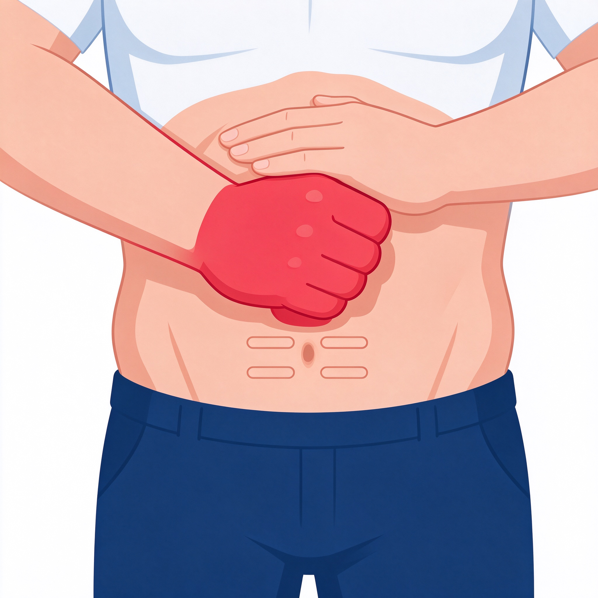
2腹部冲击握拳，拳眼对准肚脐上方两横指，向上向内冲击 5 次
注意
孕妇或肥胖者不能用腹部冲击，改用胸部冲击（拳眼对准胸骨中部）。
独自一人被噎住怎么办
身边没人帮忙时，利用身边物体自助冲击，同时大声呼救引人注意。
椅借助椅背 / 桌缘
将脐上两横指处抵住椅背、桌角或窗台边缘。
冲快速向上向内顶压
身体向前压，利用体重快速冲击，重复数次直到异物排出。
呼持续大声呼救
边做边大声喊"噎住了！"引人来帮忙；无法排出或失去意识前，尽快拨打 120。
小技巧
没有坚硬椅背时，也可以自己握拳，用另一手包住拳头快速向上向内冲击上腹部。
婴儿（1岁以下）呛噎处理
婴儿骨骼和内脏娇嫩，绝对不能套用成人腹部冲击，采用"拍背 5 次 + 胸部冲击 5 次"交替；全程用手稳固托住头颈，保持头低脚高。胸部冲击使用单手掌根，与婴儿CPR的两指按压手法不同。
3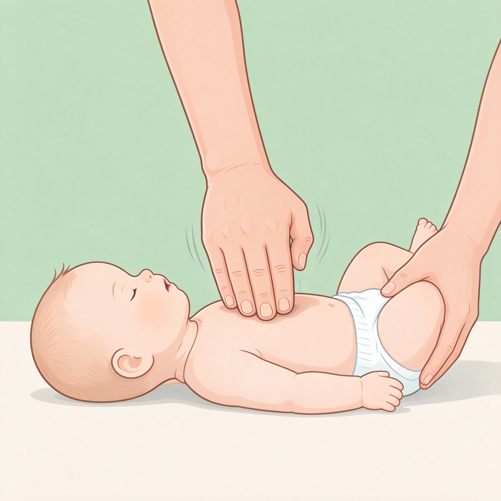
掌根胸部冲击翻正仰卧，单手掌根在胸骨中部快速按压 5 次
严禁
婴儿禁用腹部冲击！不要用手指盲目抠挖（可能把异物推更深）。失去反应立即开始婴儿 CPR 并呼救。
权威参考与案例
1噎住别喂水——各国急救指南的共同警示
气道异物权威指南
来源：美国红十字会 / 英国红十字会官方急救资料 · 2026-10 核对
多国权威急救机构（美国红十字会、英国红十字会、澳大利亚圣约翰急救）对气道梗阻的规范口径一致：能咳嗽就鼓励其自行咳出；无法呼吸、说不出话时使用拍背与腹部冲击交替法。喂水、盲目抠挖可能把异物推得更深，延误救治。
2美国儿科学会：婴儿呛奶不要倒立拍背
婴儿急救权威指南
来源：美国儿科学会（AAP）儿童急救指南 · 2026-10 核对
AAP 明确指出：婴儿呛奶或呛噎时，不要把婴儿倒立起来拍背，这会增加颈椎损伤风险，也可能让异物滑得更深。正确做法是让婴儿俯卧在前臂上（头低脚高但保持头颈中立），掌根拍背 5 次，再翻正用单手掌根做胸部冲击 5 次，交替进行。
3真实案例：海姆立克法救回卡喉老人
气道异物真实案例
案例来源：中国红十字会公开急救案例汇编 · 2026-10 核对
国内某地一位老人吃饭时被肉丸卡喉，无法说话、面色发紫。家属在旁大声呼救，邻居是退休护士，立即站到老人身后实施海姆立克腹部冲击，第三次冲击时异物排出，老人恢复呼吸。事后老人说："当时感觉胸口被顶了一下，东西就出来了。"——关键在于：判断及时、手法位置正确（脐上两横指）、冲击方向向内向上。
知识依据：本页要点参考美国心脏协会（AHA）心肺复苏指南、美国红十字会（Red Cross）、英国 NHS 及美国儿科学会（AAP）官方急救资料整理，审核日期 2026 年 10 月。仅供科普学习，操作技能请参加正规急救培训。
止血包扎第 1 节 · 出血判断
看到出血，先判断再止血
判断出血是否危险，主要看出血量、是否持续流淌或喷射、患者有无头晕/面色苍白/出冷汗等休克迹象。血液颜色只能作参考，不能作为唯一判断依据。
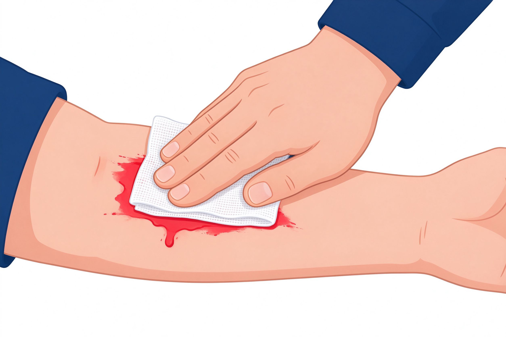
直接压迫：敷料盖住伤口，一手按压、另一手叠压加固
干净敷料持续压迫伤口，不要频繁揭开查看
三种出血，怎么辨
轻毛细血管出血
多为少量、缓慢渗血（颜色可偏暗红或鲜红），常能自行凝固；清洁后用敷料覆盖即可。
中静脉出血
血液持续、较平稳地流出，出血量可能较大（颜色多偏暗红）；需持续直接压迫并加压包扎。
重动脉出血
血液随心跳喷射或快速涌出、出血量大（颜色多偏鲜红），最危险；立即持续直接压迫、呼救并拨打 120。
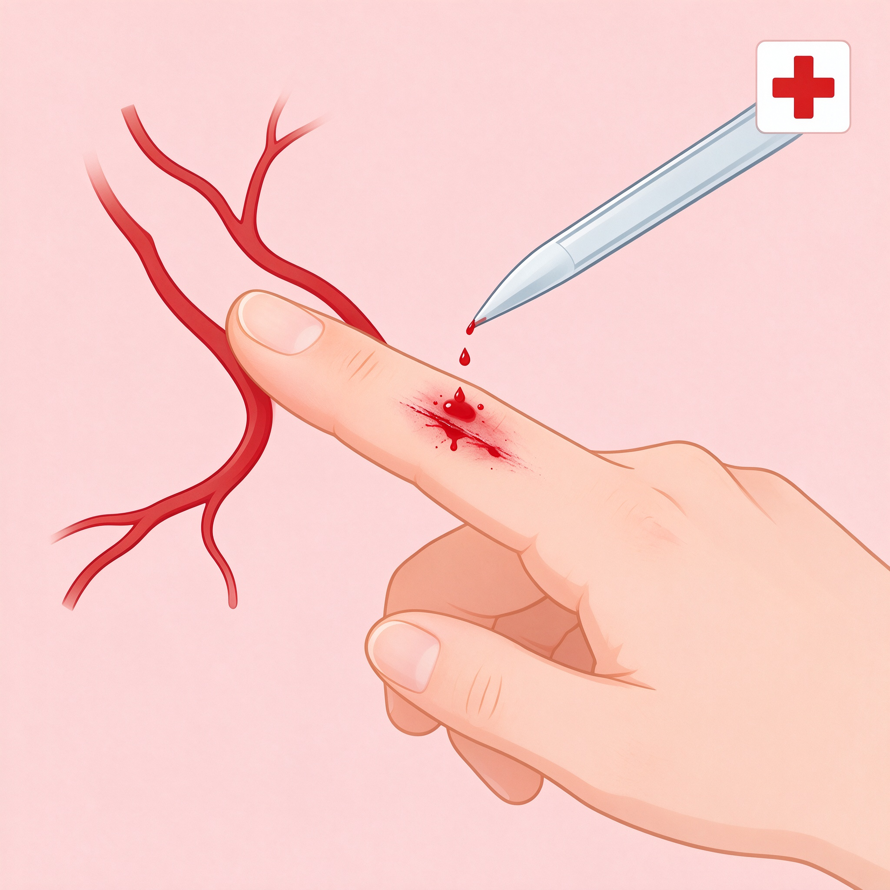
毛细血管少量渗血 · 多可自行凝固
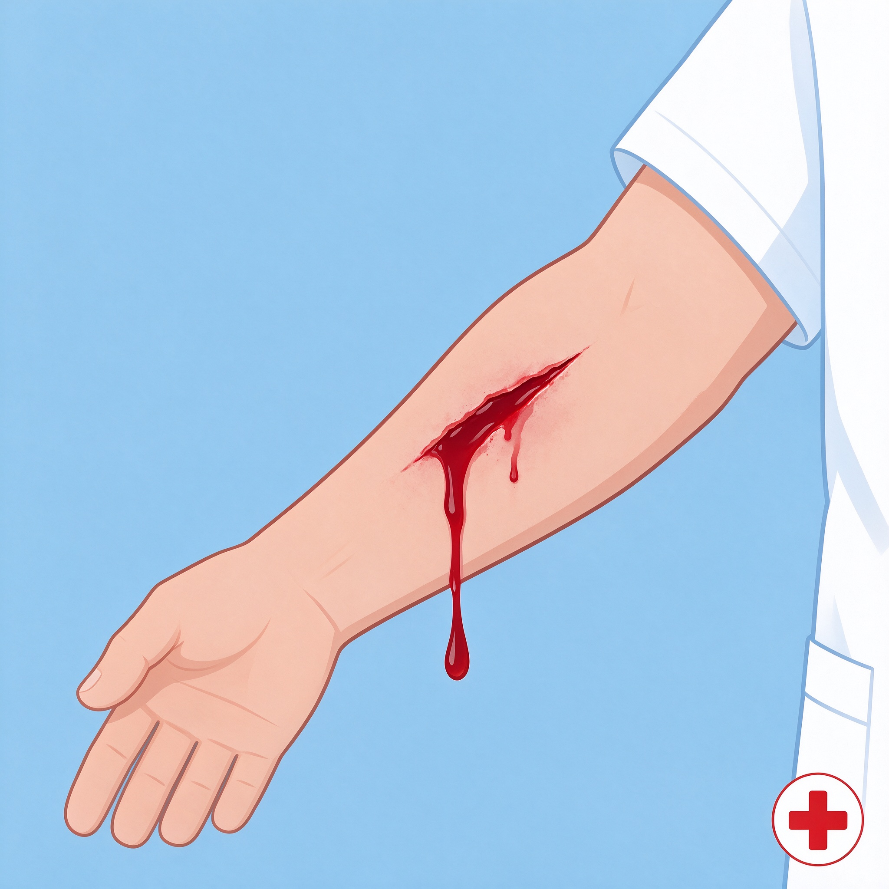
静脉持续平稳流出 · 量可能较大
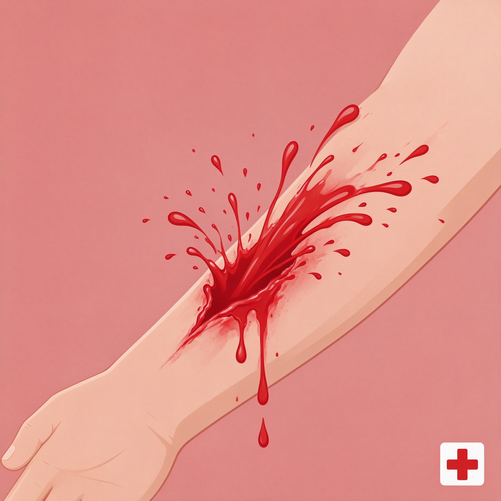
动脉喷射/快速涌出 · 立即呼救
看出血量是否快速浸透敷料
看流出方式持续流淌 / 喷射
看全身表现头晕、面色苍白、出冷汗
提示：无论哪种出血，持续直接压迫都是首选；不要只凭血液颜色判断轻重。若出血量大、呈喷射状或患者出现休克迹象，立即拨打 120。
情景演练：手掌被划伤
知识依据：本页要点参考美国心脏协会（AHA）心肺复苏指南、美国红十字会（Red Cross）及英国 NHS 官方急救资料整理，审核日期 2026 年 10 月。仅供科普学习，操作技能请参加正规急救培训。
止血包扎第 2 节 · 包扎与常见伤口
直接压迫 → 加压包扎
对中重度出血，按下面三步处理，并尽快就医。
止血三步骤
压直接压迫
用干净纱布、毛巾或衣物直接用力按压伤口，持续压迫不松手。
包加压包扎
用绷带/布条把敷料包扎固定，松紧适中，能止血但不勒得过紧。
呼持续压迫与呼救
核心是持续直接压迫不松手并尽快呼救；出血不止、量大或呈喷射状立即拨打 120。在不怀疑骨折、不增加疼痛的前提下，可适当抬高伤肢辅助，但不要因此中断压迫。
直接压迫：敷料盖住伤口持续按压
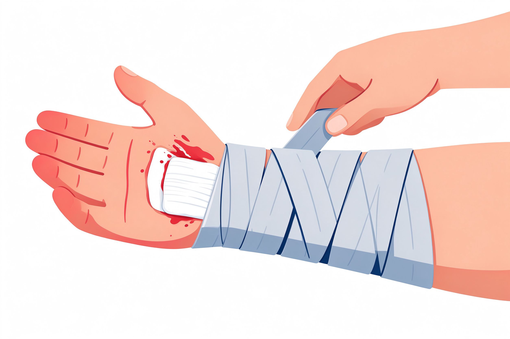
加压包扎：绷带从远端向近端缠绕
包扎后要观察
肢观察远端
手指/脚趾是否发紫、发麻、发凉，太紧要适当放松。
渗渗血处理
敷料被血浸透时，不要直接揭开，在原有敷料上再加一层继续压。
时记录时间
如使用止血带，记录开始时间并尽快送医，不要自行松开，由医务人员处理。
止血带 · 安全注意
仅在危及生命的四肢大出血、持续直接压迫无效且具备条件时，按规范使用并立即呼叫急救。务必记录使用时间，不要自行松开或取下止血带，应交由专业医务人员处理。普通公众优先掌握现场安全与直接压迫止血，止血带的具体使用应通过正规急救培训学习。
常见伤口速查
鼻鼻出血
坐直前倾，捏住鼻翼持续压迫 10~15 分钟，用嘴呼吸；不止或反复出血就医。
割割伤 / 擦伤
清水冲洗 → 压迫止血 → 消毒包扎；较深或生锈金属致伤，评估破伤风风险。
内疑似内出血
头晕、面色苍白、出冷汗、腹部疼痛——勿随意搬动，立即呼救、保暖、密切观察。
别做
不要拔出刺入身体的异物（如刀、玻璃），固定后尽快就医。
权威指南与案例
1美国红十字会：危及生命的出血，首选持续直接压迫
止血包扎权威指南
来源：美国红十字会（Red Cross）严重出血官方急救资料 · 2026-10 核对
美国红十字会明确指导：危及生命的四肢大出血，应立即持续直接压迫并呼叫急救；条件具备时按规范使用止血带。止血带一旦使用应记录时间、不要自行松开或取下，交由专业医务人员处理。切勿往伤口撒香灰、面粉等（会造成感染并妨碍清创）。
2国内：工地切伤手腕，工友用加压包扎止血送医
止血包扎国内案例
案例来源：中国红十字会公开急救案例 · 2026-10 核对
国内某工地一位工人不慎被切割机切到手腕，鲜血喷涌。旁边的工友没有慌乱，立即用干净毛巾压住伤口，再用布条绕手腕加压包扎，同时让其他人拨打 120。由于压迫及时，工人送到医院时血压尚稳定，手术顺利。关键启示：面对大出血，第一反应不是找药、不是冲洗，而是直接用干净东西压住伤口。
3英国圣约翰急救：异物刺入体内不要拔
止血包扎权威指南
来源：英国圣约翰急救（St John Ambulance）官方指南 · 2026-10 核对
英国圣约翰急救明确指出：如果有刀、玻璃、木棍等异物刺入身体，千万不要把它拔出来——拔出可能导致血管和组织二次损伤、出血加重。正确做法是用敷料把异物周围垫好，用三角巾或绷带做悬吊固定，避免异物晃动，然后尽快送医。
知识依据：本页要点参考美国心脏协会（AHA）心肺复苏指南、美国红十字会（Red Cross）及英国 NHS 官方急救资料整理，审核日期 2026 年 10 月。仅供科普学习，操作技能请参加正规急救培训。
烧烫伤第 1 节 · 五字诀
记住五个字：冲 · 脱 · 泡 · 盖 · 送
烧烫伤后正确处理能明显减轻伤害。核心是用流动凉水充分冷却约 20 分钟；其中"泡"指冷却降温，不建议长时间静止浸泡，以免耽误就医或造成失温。
流动凉水冷却是关键
尽早用流动凉水充分冷却约 20 分钟，能减轻热损伤深度。切勿涂牙膏、酱油，勿让冰块直接接触创面，不挑破水疱。
权威指南与案例
1英国 NHS：烧伤先用流动凉水冷却，别涂牙膏、别用冰块
烧烫伤权威指南
来源：英国国家医疗服务体系（NHS）官方烧伤急救资料 · 2026-10 核对
NHS 官方指导：烧伤后应立即用流动凉水冷却约 20 分钟，降温止痛、减轻损伤；大面积或儿童烧伤注意保暖防失温。不要涂抹牙膏、酱油等（污染创面并影响医生判断），不要用冰块直接接触（可能造成冻伤）；冷却后用清洁不粘连敷料松散覆盖，严重者及时就医。
2美国烧伤协会：儿童烫伤后先脱衣物再冲水
烧烫伤权威指南
来源：美国烧伤协会（ABA）儿童烧伤急救指南 · 2026-10 核对
美国烧伤协会提醒：儿童被热水烫伤后，先小心脱掉被热水浸湿的衣物（如果已经粘连在皮肤上，不要硬撕，剪开周围即可），然后立刻用流动凉水冲洗 20 分钟。不要用冰块、不要涂任何药膏，用干净床单松散覆盖后送医。婴幼儿皮肤薄，同样的烫伤面积比成人更深，应尽早就医。
3国内：家长给孩子冲热水袋导致低温烫伤
烧烫伤国内案例
案例来源：中国红十字会公开急救案例 · 2026-10 核对
国内一位家长冬天给婴儿被窝里放了热水袋，孩子连续睡了几小时后，小腿皮肤发红、起水疱，诊断为低温烫伤。低温烫伤虽然温度不高（40~50℃），但接触时间长，热能持续渗透到深层组织，看起来表面不严重，实际可能是二度甚至三度。启示：热水袋不要直接接触皮肤，用毛巾包一层；婴幼儿、老人、糖尿病患者感知迟钝，尤其要小心。
知识依据：本页要点参考美国心脏协会（AHA）心肺复苏指南、美国红十字会（Red Cross）及英国 NHS 官方急救资料整理，审核日期 2026 年 10 月。仅供科普学习，操作技能请参加正规急救培训。
烧烫伤第 2 节 · 分级与就医
烫伤分几度？先会看
不同深度处理重点不同，学会初步判断，决定是否需要就医。
三度判断 · 看图识别
一度（红斑型）
皮肤发红、疼痛，无水泡。冲洗降温，一般 3~5 天自愈。
二度（水疱型）
红肿并出现水泡，剧痛。不要挑破水泡，冲洗后就医。
三度（焦痂型）
皮肤发白或焦黑，痛感反而减弱。极严重，立即就医，勿自行处理。
以下情况必须就医
深二度以上 / 电击
有深泡、焦黑，或电击、化学烧伤。
人老人 / 儿童 / 孕
耐受差、易感染，需及时就医。
误区判断题：对还是错？
千万不要
涂牙膏、酱油、蛋清、红药水；挑破水泡；用冰块直接贴；用醋、白酒冲洗。全程保持创面清洁。
知识依据：本页要点参考美国心脏协会（AHA）心肺复苏指南、美国红十字会（Red Cross）及英国 NHS 官方急救资料整理，审核日期 2026 年 10 月。仅供科普学习，操作技能请参加正规急救培训。
实战测验闯关
急救知识闯关
10 道急救情景题，每道限时 30 秒。答对 +10 分，测测你的急救力。
第 1 题
30s
可随时切换上一题 / 下一题修改答案，全部答完再提交判分
AI助手智能急救问答
AI 急救学习助手
用情景问答练习判断与处置。真实紧急情况请立即拨打 120，按调度员指导操作，不要等待 AI 回复。
紧急情况请先拨打 120。本助手为科普练习工具，不能替代专业救援与急救培训；描述不清时我会先确认关键情况，遇到危险/错误做法会明确纠正，但不保证"绝不出错"。
AI
你好，我是急时救 AI 助手。请描述你遇到的情况，比如"有人晕倒了""被烫伤了"，我会给你急救步骤。
学习总结封底
恭喜完成，你已掌握 5 项救命技能
关键时刻，普通人的第一反应往往决定结果。记住下面这张速查卡。
CPR心肺复苏
呼救取 AED → 两乳头连线中点 → 深 5~6cm、100~120 次/分、30:2。
噎气道异物
能咳鼓励咳；不能呼吸用拍背+腹部冲击；婴儿拍背+胸部冲击交替。
烫烧烫伤
流动凉水冷却约 20 分钟，不涂牙膏、不挑水疱。
呼呼救
任何紧急情况先拨打 120，开免提按调度员指导操作。
急救电话 120
先确保现场安全，再施救；不要等待，也不要因延误而放弃。
资料来源与声明
内容参考美国心脏协会（AHA）心肺复苏指南（cpr.heart.org）、美国红十字会（Red Cross）急救资料及国内通行公众急救口径整理，审核日期 2026 年 10 月。本作品为健康科普教学，不能替代专业急救培训与现场专业救援，系统技能请参加红十字会等机构线下培训。